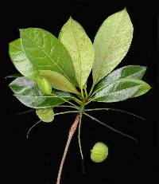

Selva Alta Perennifolia
Se encuentra en la Selva Lacandona aunque existen pequeños fragmentos en la región del Soconusco. Se caracteriza por presentar un estrato superior de 30 m de alto y con frecuencia existen arboles de 65 a 75 m. Las perennifolias, denominadas así porque sus hojas siempre están verdes, conservan una gran riqueza y proporcionan múltiples servicios ambientales. La función de los ecosistemas de selva alta perennifolia son bosques de mucha humedad, elevan su producción de oxígeno, brindan diversidad de servicios ambientales y sirven de albergue de muchas especies de fauna. Sin embargo, esas áreas se ven amenazadas por la expansión de las actividades agropecuarias y la ocupación del hombre.La selva alta perennifolia de la Selva Lacandona es única en el país, la última en territorio nacional.
Hasta arriba están los grupos de árboles que surgen del bosque principal a una altura quizá de 38 a 54 m. que semejan nubes de cúmulos verdes; y tanto se entrelazan las copas de estos árboles que forman una fina cortina que oculta casi toda la luz del sol. Las especies más comunes son: Terminalia amazonia, Brosimum alicastrum, Swietenia macrophylla, Sterculia apetala, Poulsenia armata, Dialium guianense, Manilkara achras, Humus mexicana, las cuales, sirven de soporte para una gran cantidad de trepadoras leñosas y epífitas.
Bajo esta capa hay otra formada por la parte superior de árboles más bajos, de 12 a 18 m. de altura, que luchan por captar algo de luz.Entre las principales especies, se encuentran: Theobroma cacao, Pimenta dioica, Cedrela odorata, Manilkara achras, Scheelea liebmannii, Bursera simaruba, Cymbopetalum penduliflorum, las cuales, soportan también una gran cantidad de plantas trepadoras leñosas y epífitas, que dan el aspecto de una red continua a lo largo del bosque. Más abajo se ve otro nivel de árboles aún más pequeños, de 6 a 9 m. de alto, y al final se encuentran los arbustos, que apenas reciben los débiles rayos que logran filtrarse a través de las capas superiores.
|  |
La fauna de la selva alta es muy variada y muy rica en endemismos, por el efecto de aislamiento a raíz de la complejidad orografica
| REPTILES | AVES | MAMIFEROS |
|
|
|